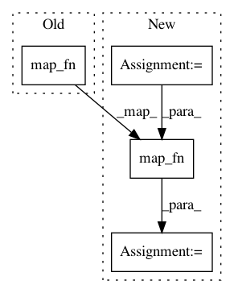

6d7df1488515a1a916613308e74afa0a8b685db8,neuron/layers.py,SpatialTransformer,call,#SpatialTransformer#Any#,305
Before Change
// go from affine
if self.is_affine:
trf = tf.map_fn(lambda x: self._single_aff_to_shift(x, vol.shape[1:-1]), trf, dtype=tf.float32)
// prepare location shift
if self.indexing == "xy": // shift the first two dimensions
trf_split = tf.split(trf, trf.shape[-1], axis=-1)
After Change
nrows += 1
if len(trf.shape[1:]) == 1:
trf = tf.reshape(trf, shape=(-1, nrows, ncols))
trf += tf.eye(nrows, ncols, batch_shape=(tf.shape(trf)[0],))
fun = lambda x: affine_to_shift(x, vol.shape[1:-1], shift_center=True)
trf = tf.map_fn(fun, trf, dtype=tf.float32)
// prepare location shift
if self.indexing == "xy": // shift the first two dimensions
trf_split = tf.split(trf, trf.shape[-1], axis=-1)
In pattern: SUPERPATTERN
Frequency: 3
Non-data size: 4
Instances
Project Name: adalca/neuron
Commit Name: 6d7df1488515a1a916613308e74afa0a8b685db8
Time: 2020-07-28
Author: mhoffmann@mgh.harvard.edu
File Name: neuron/layers.py
Class Name: SpatialTransformer
Method Name: call
Project Name: adalca/neuron
Commit Name: da9e36bf6a332378e4dbe46e0ad116996811637e
Time: 2018-11-15
Author: adalca@mit.edu
File Name: neuron/layers.py
Class Name: VecInt
Method Name: call
Project Name: fizyr/keras-retinanet
Commit Name: 026623c523f41bc04d6193dd1c5fe58953c2fe98
Time: 2020-07-28
Author: bodenstein@soccerwatch.tv
File Name: keras_retinanet/layers/filter_detections.py
Class Name: FilterDetections
Method Name: call